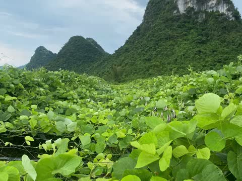
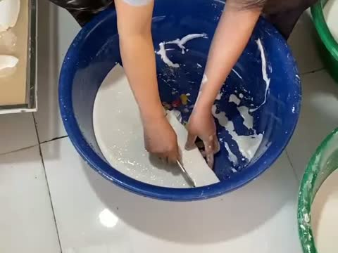
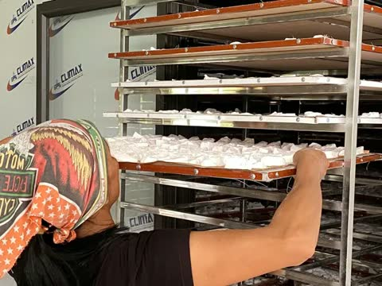
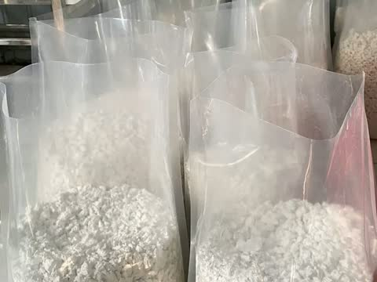

The Hung Organic Cooperative (THOC)Lien Lac village, Vu Lang commune, Lang Son, Vietnam
Kudzu Root Starch
Specification sheet for importers and wholesale buyers · Updated October 2026




| Product | Kudzu root starch (Vietnamese: tinh bột sắn dây), from kudzu roots (Pueraria) |
|---|---|
| Ingredients | 100% kudzu root starch. No additives, no bleaching agents |
| Process | Roots washed and crushed; starch filtered and settled by hand several times; dried in a multi-tray drying oven |
| Appearance | Dry, white starch in natural pieces |
| Packaging | 0.5 kg and 1 kg retail bags; 5 kg and 10 kg bulk bags. Other sizes: please ask |
| Shelf life | 24 months from the production date, unopened |
| Storage | Cool, dry place away from direct sunlight; reseal after opening |
| Production capacity | Approx. 10–20 tonnes per month |
| Minimum export order | 100 kg |
| Origin | Vu Lang commune, Lang Son province, Vietnam |
| Producer | The Hung Organic Cooperative (THOC) |
| Laboratory test report | Being prepared; ask us for the current status |
| Certification | No formal food-safety certification yet |
| Price, lead time, shipping terms | Quoted per order: tell us the destination country, volume and packaging |
Information supplied by the cooperative. Kudzu root starch is a food ingredient and is not intended to diagnose, treat or cure any condition.